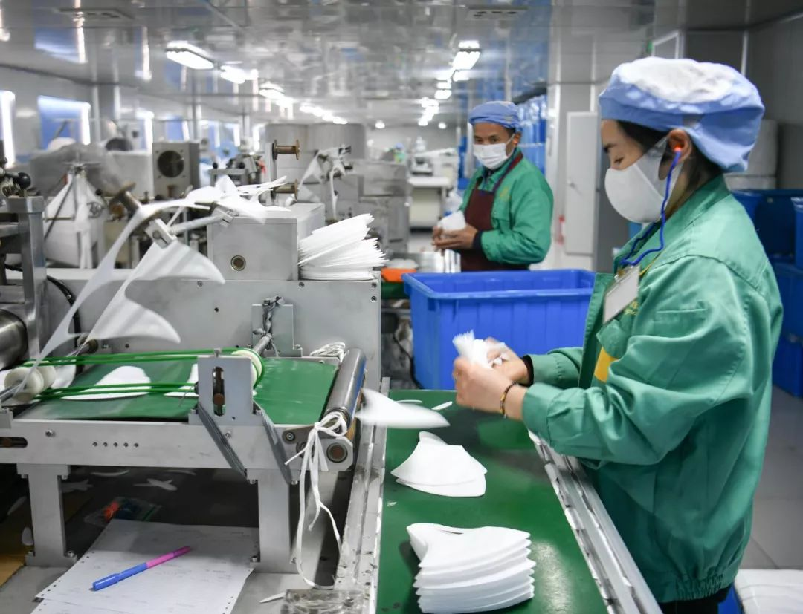

我们正在与时间赛跑（武汉战纪八）
原文链接 备份链接 今天是武汉封城的第九天，也是完全宅在家里的一天。 我和家人一切都好，继续深宅，闭门不出。 前线仍旧坏消息不断，比如物资仍旧匮乏，医护人员缺少保护，只得自己动手做口罩应急。 唯一的好消息，就是本地确诊病例似乎在缓慢下降。 …
从来没想到，居然有一天，我会在流水线上生产一天的口罩。

在我对自己的职业规划中，从来没有想到过，居然有一天我会在流水线上生产一天的口罩。
口罩在生活中，随处可见，如果没有这次疫情，绝大部分的人都不太会去关注我们平时戴的口罩是从哪里来的。春节前，疫情一公布，身边有“非典”经验的朋友就提醒我要去买口罩、酒精棉球等医用产品，因为2003年的时候，我还在国外留学，完全没有“囤货”体验。好在朋友们纷纷给我送了不少各式各样的口罩来。
随着疫情的爆发，口罩突然成了一个热点：首先是朋友圈的头像都纷纷P上了一个口罩，接着就是各大公众号不断强调出门要戴口罩，紧随而来的是纷纷吐槽劝说老人带口罩的心累，当然最终，就是各大群内纷纷打听哪里还能买到口罩。到了这个时候，我始终还是一个迷惑的状态。这个时间口罩买不到，在我看来是一件极为正常的事情，毕竟春节大部分的工厂都已经放假了，没有产出，只有消耗。口罩是一种流水线生产的产品，算不上什么高精尖产品，一旦工厂复工，怎么也不可能缺的。
在一派紧张的气氛中，我在松江车墩工作的朋友给我发消息说，上海市内松江是口罩生产比较集中的一个区域，他们所在的单位明天会去一家口罩厂做志愿者。这家医用材料厂已经从年初二就复工了一条流水线，但是因为人手紧缺，其余的流水线开不起来。我立刻问，我可以去吗？保证近期没有离开过上海，没有接触过相关人员，没有发烧，从国家要求闭关开始就老老实实在家呆着。随便干什么都可以，保证服从安排！

第二天一早，我就从家里出发来到车墩。我到时候，所有的志愿者已经全员到齐了。厂门口排着长长的车队，都是各个药店来提货的货车。志愿者全戴着口罩，在门房外排队登机测体温。测好体温后，用酒精清洗双手，才被允许进入厂区。厂内有两个大的生产车间，女生被分配去车间看流水线，男生则做体力活，进行周转和搬运。
我们进入车间前都需要换衣服：在更衣间内换上一次性防护罩衣，带上口罩，头发必须全部笼进一次性的头罩内，脚上套上鞋套。从更衣间走进去，是洗手池，需要再次用杀菌皂液彻底洗净双手，然后再一次用酒精消毒。洗干净双手后，进入风淋隔间整个人再进行杀菌后才能真正进入车间。
口罩的生产确实如我所料是全自动的：把所有原料安装到位，机器就从送料、压制开始全自动生产。一条流水线有两个最终出口，一位志愿者和一位熟练工人搭配，分别管两个出口。其实我们要做的事情也很简单：机器会以10个为单位垒成一摞，我们要做的是点数和检查。流水线的最后一道是把口罩的耳绳烫压上去，有时候机器可能会漏，或者没有烫牢，我们必须整理和检查，有不合格的产品要剔除。然后再以50为单位，把口罩整理好后放入流转箱。这个活说起来简单，但真是需要全神贯注，不能有一点分心的。机器不会停歇，所以我们也必需一分钟不停地检查、整理、点数、装箱。还要注意原料是不是有缺，一旦缺少，机器就会停工，必须请老师傅安装好。一天下来，除了午饭的半个小时，所有人一步不敢离开，连水都不敢多喝，就怕去上厕所浪费时间。整个车间除了机器的噪音，没有一个人说话。我们点数装箱的口罩，再由男工流转到灭菌车间，进行灭菌和包装。
志愿者的工作时间是从8：30开始，16：30结束。但工人师傅们是要干通宵的。结束后，大家互相问了一下装了多少箱，基本上都在10箱子左右。一箱子是4000个口罩，也就是多去一个志愿者，一天可以多生产40000个左右的口罩。熟练工人的产量应该比我们还要多，我们只能是作为一个补充。但是不管怎么样，在那么紧张的时候，能多做一个口罩出来，我们都觉得是有价值的。

午休的时间里，我们碰到了黄厂长，他手里的电话就没有断过。我们听了一会儿，要么就是在催上游供应材料，要么就是拒绝各种各样的进货要求。全上海市的口罩已经由市政府全面统筹，无论是个人还是企业，都不可以从口罩厂直接拿货。
知道我去做志愿者的朋友们基本上都是实名羡慕，觉得能在这个时候去做点事情，实在是太不容易了。我在朋友圈大致说了一下一天的情况，朋友们也纷纷表示大家都愿意去做志愿者。另外，听到口罩厂已经不眠不休到连厕所都不敢去的地步，大家也就互相提醒：不要出去盲目抢口罩了，继续在家乖乖呆着。毕竟也不是都没有口罩，更多的，只是“恐慌”缺口罩而已。不添乱，就是最好的帮忙。
（图：陈梦泽 摄）
关于我们：
本公众号乃上海发行量最大的报纸《新民晚报》副刊《夜光杯》的官方微信，《夜光杯》是中国历史最悠久的报纸副刊，在微信平台，我们将以全新的面貌继续陪伴您。欢迎免费订阅，我们将每日精选两篇新鲜出炉的佳作推送到您的手机。所有文章皆为《夜光杯》作者原创，未经允许不得转载。
点击下面的篇目链接，可重读夜光杯微信公众号12月高点击率美文：
原文链接 备份链接 今天是武汉封城的第九天，也是完全宅在家里的一天。 我和家人一切都好，继续深宅，闭门不出。 前线仍旧坏消息不断，比如物资仍旧匮乏，医护人员缺少保护，只得自己动手做口罩应急。 唯一的好消息，就是本地确诊病例似乎在缓慢下降。 …
原文链接 备份链接 30.01.2020本文字数：1684，阅读时长大约2.5分钟 导读：“病毒属于潜伏期，我们要做好全部的准备，亏钱也要做。” 作者 | 第一财经 刘佳 大年二十七，刚刚从成都回到老家江西准备春节的90后廖佳明，急急忙 …
原文链接 备份链接 经历这样的危机事件，对孩子幼小的心灵会有很大冲击，同时也可以成为孩子心理成长的契机。 面对新型冠状病毒肺炎，即便是医务人员的我，也感到心烦意乱。一边不停地刷疫情进展、实时报道，心情随着数字起伏不定，一边操心买口罩、买 …
原文链接 备份链接 武汉“封城”后公共交通停运，自1月24日开始，路上开始出现民间自助形式的车队。私家车主轮班，车队昼夜不停，每天接送医护人员、运输医疗物资，每送一趟要用75%酒精浓度的消毒液喷洒一遍车辆，油钱、防护口罩、消毒液都自掏腰 …
原文链接 备份链接 作者 | 冯冬宁 张永斌 刘涛 编辑 | 张庆宁 出品 | 棱镜·腾讯小满工作室 欢迎下载腾讯新闻APP，阅读更多优质资讯 2020年1月25日，大年初一。 是日一早，闫云霞重新回到前几日战斗的车间，她是日照三奇医疗 …